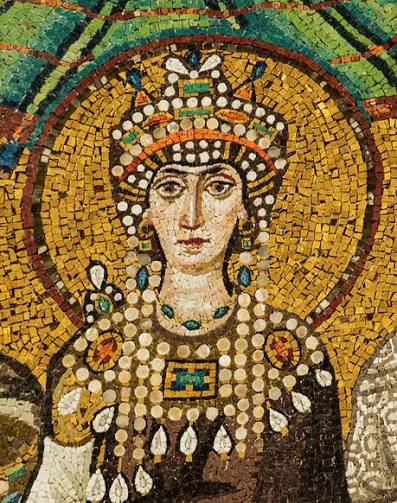

Constantinople et Smyrne

À Smyrne, les anciens parlent encore de Constantinople comme d'une puissance, bien que la ville soit tombée depuis longtemps. Selon le contexte, le terme désigne la ville elle-même, ou la cour en exil : les héritiers de l'ancien Rêve, qui ont fui la ville en 1204 et en portent toujours le nom sans la posséder. Le Prince actuel d'Istanbul souhaite se placer dans la continuité de cette histoire, mais les Caïnites de Smyrne parlent de lui comme du « Prince d'Istanbul ». Une grande partie de l'histoire de Smyrne depuis le XIIIᵉ siècle s'est écrite avec Constantinople, et rarement à son avantage. Aujourd'hui encore, la plupart des clans de la ville sont dirigés par des lignées issues de son influence.
I. Le don de Smyrne
En 1204, les croisés prennent Constantinople et le Rêve s'effondre avec elle. Ses héritiers ventrue se replient à Nicée, sans pour autant renoncer au nom de leur ville, qu'ils espèrent reprendre un jour.
Vers 1250, Kushi descend sur l'Anatolie dans le sillage des migrations mongoles, avec l'armée des Anda. Le chef de guerre nomade est un conquérant bien plus qu'un administrateur, et les villes qui lui résistent ne survivent généralement pas à son passage. Son avance menace bientôt Constantinople, qui n'a pas les moyens de l'arrêter par les armes. La cour choisit alors de lui offrir une ville pour le détourner d'elle : Smyrne. L'offre est portée par Irène Stella, qui parle depuis Nicée au nom de ceux qui ont fui.
Les Ventrue de Smyrne refusent d'être ainsi cédés, et leur lignée est presque entièrement détruite. Calliope, alors Gardienne du Jardin, rallie les Toréador contre le nouveau Prince. Kushi la fait enlever, l'exécute devant la Cour puis la diablérise. Cette violence suffit à Kushi : Constantinople est épargnée, et c'est Smyrne qui en paie le prix.
II. Theodora

Elle pose une condition à cette alliance : des excuses publiques pour la mort de Calliope, afin que le clan Toréador de la ville soit en paix. Smyrne reconnaît ses torts devant elle, accorde dix faveurs au clan Toréador et des privilèges au Gardien du Jardin.
Pour les Toréador de Smyrne, c'est devant elle que la ville s'est inclinée, et la lignée qui dirige leur clan commence avec elle.
III. L'arrivée des Primogènes
Depuis le don de Smyrne, trois des quatre clans de la ville sont dirigés par ceux que Constantinople y a envoyés, directement ou par leurs sires.
Les Brujah sont les premiers. En 1460, Gemistos Akropolite arrive de Constantinople, premier Brujah à demander un statut d'invité officiel. Il reprend ensuite contact avec son frère de sang Childéric, qui envoie à Smyrne ses infants Emine Zeyneb et Bardas Planudes. Bardas devient Primogène en 1550. Vers 1820, Gemistos s'établit à Constantinople et son infant Enry rentre seul à Smyrne. C'est lui qui succède à Bardas en 1921, après l'attaque contre le Sabbat.
Les Ventrue suivent. En 1555, la Vieille Garde venue de Constantinople reprend les souterrains de la ville. Ibrahim Pacha, infant d'Anna Comnène, est appelé depuis Nicée vers 1600 et devient Primogène. Son infant Kerem Arslan lui succède en 2000.
Chez les Toréador, Theodora envoie vers 1600 son infant Alkis, qui ramène le clan à la Cour après des siècles de deuil. Il la tient jusqu'à sa mort en 1845, tombé dans l'une des batailles du Prince. Après cinq ans de troubles, son infante Nafissa lui succède.
Seuls les Tremere font exception : leur Chantry est fondée depuis Vienne, par Athènes, en 1919, avec l'approbation officielle de Kushi.
IV. Une entente
Smyrne a noué et défait des alliances avec Constantinople, mais il s'est toujours agi de politique : Kushi semble peu intéressé par les querelles philosophiques et théologiques de la cour en exil. Les deux puissances se considèrent mutuellement comme des menaces, mais elles ont, dit-on, chacune bien assez d'ennemis comme ça.
Le prix de cette paix est simple : Kushi se tient loin de Constantinople. Le Prince actuel d'Istanbul a repris cet accord à son compte. Tant que Kushi reste hors de ses terres, il ne voit aucun intérêt à le prendre en grippe, ni à lui reprocher de s'être installé si près de lui après avoir menacé sa ville.